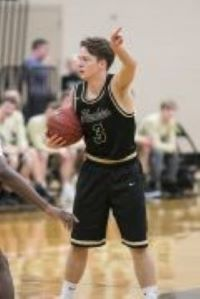
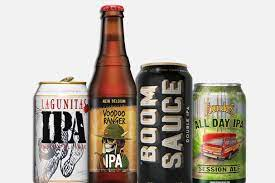
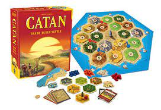
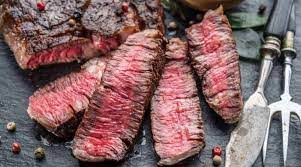
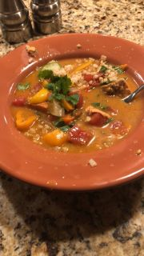
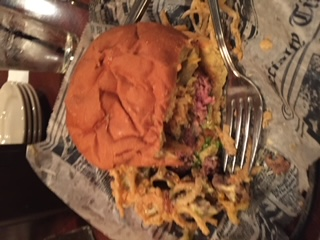
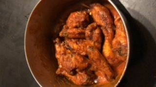

More About Me
What I like to do
Play sports like volleyball, basketball, spikeball, and whatever else. I am just competetive and like to play things.

Play Video games like Call of Duty, Clash of Clans, NFL Street 2, and many others.

Go to breweries and drink beer while playing a game or eating food is also great.


Finally, I just really like to chill.
What About My Future
I will be graduating in December with my bachelors in computer science, and in January I will be starting a job at Optum in a software engineering role. After I start working I am really excited to have a real income, and to finally build a PC. I'm not sure where I would like to live in the future, but I would like to go live somewhere else, at least for a little while.
My Favorite Foods
I really love food. Because of this love for food, I also like to cook sometimes. When I was a kid I wanted to be a food critic when I grew up. I thought that
the bad guy food critic Anton Eno from Ratatoullie had the coolest job. That being said, here are some of
my favorite foods to eat.
Steak -- A delicious, medium rare steak, maybe basted in some butter with garlic, rosemary, and thyme. Pretty much can't beat it.

Brazilian Fish Stew -- A family recipe that was given by some friends. It is unbelievable. Salmon over rice with an insane coconut
milk based broth with onions, peppers, tomatoes, and cilantro. Put some lime and cilantro on it, and oh my lord is it tastey.

A Delicious Burger -- This is a little broad. It isn't a specific burger (although the Widowmaker from "The Tavern Bar & Grill" is my favorite),
but it is any burger that is simply awesome. Could be a delicious burger that is relatively simple, or it could be one that just has awesome ingredients on it.

Buffalo Wings -- Growing up obsessed with watching football, my family ate a lot of buffalo wings, and my dad made them great. I have had
a love for buffalo wings for as long as I can remember. Blue cheese is correct.
